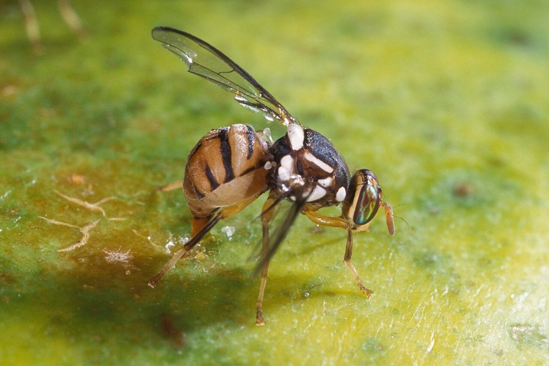

फल मक्खीOriental Fruit Fly
Bactrocera dorsalis · Tephritidae · INS-0056

- Scientific name
- Bactrocera dorsalis (Hendel, 1912)
- Family
- Tephritidae
- Hindi
- फल मक्खी
- Local names
- phal makkhi, phal makhi, aam ki makkhi, fruit fly
- Status here
- native
- IUCN
- not evaluated
- Review
- audited and independently read
When to look कब देखें
Expected mainly in June, July, August, September, October, November.
Uses and possibilities उपयोग और संभावनाएँ
Drawn from the documented uses in the profile below, where each is labelled traditional, current or a research lead. All uses →
फल मक्खी / Oriental Fruit Fly
Bactrocera dorsalis (Hendel, 1912) — Tephritidae
फल मक्खी — आम, अमरूद, पपीते, नीबू और दूसरी नरम फलों में छेद करने वाली मक्खी, जिसकी इल्ली फल के अंदर सड़ा देती है। छोटी, भूरी या पीली-भूरी मक्खी जो गर्मियों में बाग़ों में जिधर देखो उधर दिखती है। मानसून के आते ही इसकी तादाद इतनी बढ़ जाती है कि किसान के फलों का नुकसान पूरा हो जाता है। कीटनाशक से नियंत्रण मुश्किल, लेकिन फलों को छाँटना और गिरे हुए फलों को दबाना काम करता है।
Quick Identification त्वरित पहचान
| Feature | Description |
|---|---|
| Adult size | 6–8 mm, compact with reddish-brown wings |
| Colour | Yellow-brown to dark brown body; wings with dark markings and bands |
| Wing pattern | Characteristic dark S-shaped or banded pattern on transparent wings |
| Behaviour | Attracted to ripening and fermenting fruits; rests on fruit surface |
| Larval sign | Brown, crescent-shaped eggs inserted under fruit skin; rotting flesh inside |
| Damage symptom | Punctures and discoloured spots on fruit; internal rot and fermentation |
Field tip: Look for small flies circling ripening mangoes or guavas, especially near cracks in the fruit. Rotting fruit with a fermented smell and small white maggots inside is a sure sign. The flies are attracted to the sweet smell of overripe or fermenting fruit.
हिंदी — कैसे पहचानें: पके आम के आसपास छोटी-छोटी भूरी मक्खियाँ उड़ती हुई नज़र आएँ तो ये मक्खी हो सकती है। फल के अंदर से सड़ाँध आए और छोटी-छोटी इल्लियाँ दिखें तो निश्चित है। फल के छिलके के नीचे भूरे रंग के छोटे छिद्र भी इसकी निशानी हैं।
Morphology आकारिकी
Biometrics:
| Measurement | Range |
|---|---|
| Adult body length | 6–8 mm |
| Adult wingspan | 10–12 mm |
| Egg | 0.8–1 mm, crescent-shaped, pale yellow |
| Larval length (mature) | 8–10 mm |
| Pupal length | 6–7 mm |
| Larvae per infested fruit | 50–100 |
Adult: Reddish-brown to dark brown body, more robust than most Bactrocera. Wings are characteristic: nearly transparent with dark markings, including an S-shaped mark on the costa and dark bands. Head is pale yellow-brown with black markings on the face. Eyes are dark red or reddish-brown. The thorax is covered with short setae.
Egg: Crescent-shaped, pale yellow, inserted just beneath the fruit skin in clusters. Females lay 50–100 eggs per fruit over several hours.
Larval stage: Maggot-like, smooth, white to cream-coloured, lacks a distinct head capsule. The posterior end has two characteristic brown spiracles. Larvae burrow through the fruit tissue, creating galleries and causing brown discolouration and fermentation.
हिंदी: वयस्क मक्खी भूरी, पंखों पर गहरी धारियाँ। अंडे अर्धचंद्राकार, पीले, फल के छिलके के नीचे। इल्ली सफेद, मांसल, फल के अंदर सुरंग खोदती है।
Behaviour & Ecology व्यवहार और पारिस्थितिकी
A specialist pest of fleshy fruits, attracted to ripening and fermenting fruit by volatile compounds. Females can detect ripening fruit from some distance and land to probe and oviposit within minutes. The fly is active during the day, especially in warm, humid conditions. Larvae tunnel through the fruit, feeding on the flesh, causing brown discolouration, fermentation and rapid spoilage. The larvae pupate in the soil, and the pupal stage can last weeks to months, depending on temperature, allowing the insect to overwinter in mild climates or in stored fruit.
The Oriental Fruit Fly has few natural enemies in agricultural settings, though parasitoid wasps (Opius and Diachasmimorpha species) can reduce populations. Birds and some ground beetles eat the adults and larvae, but cannot control the pest where fruit is abundant.
हिंदी: पके फलों की खुशबू से आकर्षित होती है। मादा फल के अंदर अंडे देती है। इल्लियाँ फल को सड़ा देती हैं। खेत में इसके कुछ ही दुश्मन होते हैं।
Life Cycle / Phenology जीवन चक्र
| Stage / season | Event |
|---|---|
| Egg, 2–3 days | Inserted under fruit skin, in batches |
| Larval period, 8–12 days | Feeding inside fruit, creating rot |
| Pupal stage, 7–14 days | In loose soil, or longer in cool season |
| Adult, 7–10 days | Maturation, feeding, and oviposition |
| June–July | Low populations; some activity in early summer |
| August–October | Outbreak phase; multiple generations; heavy fruit damage |
| November–May | Low populations; survivors on stored fruit and ratoons |
हिंदी: अंडा दो-तीन दिन, इल्ली आठ-बारह दिन, प्यूपा सात-चौदह दिन। गर्मी में धीरे, सर्दी में बहुत धीरे। गर्मी का मुख्य मौसम।
Host Plants or Prey आहार
- Mango Mango: the primary host in eastern UP; most economically important
- Guava (Psidium guajava): heavily infested; soft fruits especially susceptible
- Papaya (Carica papaya): secondary host
- Citrus (Citrus spp.): date palm and lime occasionally infested
- Other fruits: peach, plum, apricot, custard apple, passion fruit, where these are grown
- Secondary hosts: vegetable fruits like bottle gourd, bitter gourd, and okra during lean fruit seasons
Predators / Natural Enemies शत्रु
- Parasitoid wasps: Opius and Diachasmimorpha species (larval parasitoids); Pteromalus species (pupal parasitoids)
- Predators: House sparrows and other birds; ground beetles (Carabidae); some praying mantids
- Entomopathogenic nematodes: can infect larvae in soil
- Fungi: Beauveria bassiana and Metarhizium anisopliae can infect adults under high humidity
Agricultural / Human Relevance कृषि प्रासंगिकता
Major pest. The Oriental Fruit Fly causes severe losses to mango, guava and other fruit growers across tropical Asia. In eastern UP, infestations during the monsoon can render a mango crop unmarketable, with very heavy losses in unmanaged orchards. The larvae's tunnelling causes rot and fermentation, which makes the fruit unsaleable even if externally undamaged.
What works (Traditional, Today, Research direction):
- Traditional: Destroying fallen and affected fruits by burying them or scalding them in hot water.
- Today: Fruit bagging with newspaper or cloth bags at the marble stage of fruit development, which prevents oviposition. Orchard sanitation: collecting and destroying all fallen and infested fruits weekly. Liming or flooding of soil to kill pupae. Selective use of malathion or spinosad sprays on fruit, only after confirming infestation. In export markets, methyl bromide fumigation or hot water immersion.
- Research direction (a lead, not a result): Integrated management combining resistant varieties, early bagging, and conservation of native parasitoids shows promise. The village-level lead is daily scouting and removal of infested fruit.
हिंदी: आम के बाग़ का बड़ा दुश्मन। गिरे फलों को तोड़कर दबाना, कागज़ में फल लपेटना, खेत को पानी से भरना। कीटनाशक से कम, साफ़-सफ़ाई से ज़्यादा काम। स्थानीय ततैयों को बचाना मायने रखता है।
Expected Locally स्थानीय रूप से अपेक्षित
Not a field record. Written from published accounts for eastern Uttar Pradesh. No confirmed local sighting yet — if you have seen it, that is what the atlas needs.
अभी तक स्थानीय पुष्टि नहीं। यह विवरण प्रकाशित स्रोतों से है, किसी अवलोकन से नहीं।
Expected in every mango and guava orchard in Basti district during and after the monsoon, especially in July through October. Heavy infestations occur in years with abundant and prolonged monsoon rains, which favour oviposition and larval development. Infestations are worse in older orchards with dense canopy and poor sanitation. A count of infested fruit or larvae from fallen fruit, with date and location, would be the first confirmed record for the district.
Distribution वितरण
Global range: Tropical and subtropical Asia, from India through Southeast Asia to Japan and Australia. Native to eastern Asia, now widespread through human trade in fruit.
In India: Throughout all major fruit-growing regions, especially in tropical and subtropical areas.
In Uttar Pradesh: Widespread in mango and guava-growing areas of the plains; most significant in eastern districts.
In Basti district / eastern UP: Expected in all mango orchards and fruit gardens. Infestations increase from June onwards and peak during the monsoon fruit season.
Research Questions शोध प्रश्न
Anyone can investigate these | कोई भी इन प्रश्नों की जाँच कर सकता है
- How many infested fruits must you remove daily to prevent population increase in a small mango orchard? / एक छोटे आम के बाग़ में जनसंख्या बढ़ने से रोकने के लिए रोज़ कितने संक्रमित फल निकालने पड़ते हैं? — Record removal rates and population counts over a season.
- Do bagged fruits (wrapped in newspaper at marble stage) have significantly fewer infested fruits than unbagged fruits on the same tree? — Compare bagged and unbagged branches on the same orchard tree.
- Which mango varieties in your village show resistance to Oriental Fruit Fly infestation? — Measure infestation rates across different varieties.
- How long does the pupal stage last in soil at different soil temperatures during winter? — Dig up soil regularly and count pupae.
- What parasitoid wasps emerge from infested fruit collected in your field? — Keep infested fruits in a container with fine mesh and observe for wasp emergence.
Similar Species मिलती-जुलती प्रजातियाँ
| Species | How to tell apart | हिंदी |
|---|---|---|
| Banana Fruit Fly (Bactrocera latifrons) | Slightly larger; infests banana and certain Cucurbitaceae; wing pattern lacks the prominent S-mark | केला की मक्खी, बड़ी, अलग फल पसंद |
| Melon Fly (Bactrocera cucurbitae) | Smaller (5–6 mm); infests gourds and melons, not mangoes; wing pattern different | तरबूज़ की मक्खी, कद्दू वर्ग के फलों में |
| Common House Fly (Musca domestica) | Larger (6–7 mm), grey-black body, lacks the distinctive wing pattern and behaviour | साधारण घर की मक्खी, काली, फलों में नहीं देखी जाती |
Field rule: Small reddish-brown fly with dark S-shaped markings on wings, found around ripening or fermenting mango and guava, with larvae tunnelling inside the fruit and causing internal rot.
Taxonomy & Classification वर्गीकरण
Original description. Described by Carl Hendel in 1912 in Marcellia 10: 60–61, as Dacus dorsalis. The genus Bactrocera was erected by Robineau-Desvoidy in 1830. The species name dorsalis refers to the dorsal (back) markings on the wings.
Subspecies. Monotypic — no subspecies are currently recognised.
Family and order placement. Tephritidae (true fruit flies), order Diptera. The genus Bactrocera is the largest genus of pest fruit flies in the Indo-Pacific region.
Phylogenetic notes. Bactrocera dorsalis is part of the dorsalis complex, a group of closely related species that are difficult to distinguish morphologically. Molecular data shows it to be distinct from several lookalikes including B. papayae and B. invadens.
IUCN status rationale. Not evaluated. Like most agricultural pest insects, it is too widespread and adaptable to warrant IUCN assessment.
Photo Gallery फोटो गैलरी
Photos needed आवश्यक फोटो
- [ ] Adult fly on a mango (आम पर मक्खी)
- [ ] Infested mango (cut to show larvae) (काटा हुआ संक्रमित आम)
- [ ] Larvae in overripe fruit (पके फल में इल्लियाँ)
No photos yet — add field photos to media/species/oriental_fruit_fly/ and run node scripts/sync_photos.js.
References संदर्भ
- Hendel, C. (1912). Fam. Trypetidae. In: Wytsman, P. (ed.). Genera Insectorum 136: 1–84. [original description]
- Drew, R.A.I. & Hancock, D.L. (1994). The Bactrocera dorsalis complex of fruit flies (Diptera: Tephritidae) in Asia. Bulletin of Entomological Research Supplement Series 2: 1–68.
- Vargas, R.I. et al. (2015). Management of invasive fruit flies. CAB Reviews 10: 1–16.
- Indian Council of Agricultural Research (2018). Integrated Pest Management Package for Mango. ICAR–NCIPM, New Delhi.
- White, I.M. & Elson-Harris, M.M. (1992). Fruit Flies of Economic Significance: Their Identification and Bionomics. CABI, Wallingford.
- GBIF Occurrence Data — Bactrocera dorsalis, India (2024).
Source file: species/fauna/insects/oriental_fruit_fly.md